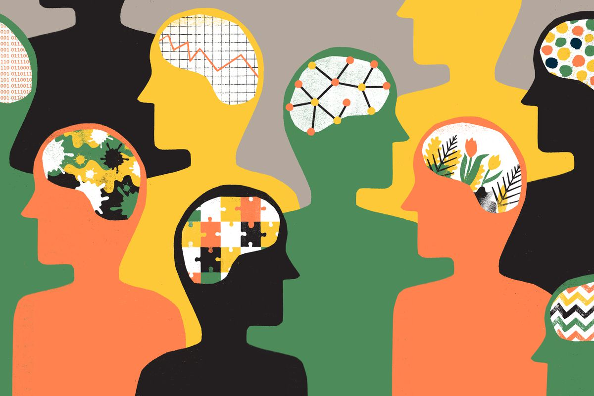
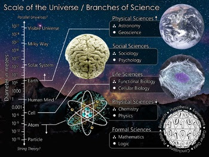

science, any system of knowledge that is concerned with the physical world and its phenomena and that entails unbiased observations and systematic experimentation. In general, a science involves a pursuit of knowledge covering general truths or the operations of fundamental laws.
science, any system of knowledge that is concerned with the physical world and its phenomena and that entails unbiased observations and systematic experimentation. In general, a science involves a pursuit of knowledge covering general truths or the operations of fundamental laws.

Social science is the study of human behavior and functioning of societies.[20][21] It has many disciplines that include, but are not limited to anthropology, economics, history, human geography, political science, psychology, and sociology.[20] In the social sciences, there are many competing theoretical perspectives, many of which are extended through competing research programs such as the functionalists, conflict theorists, and interactionists in sociology.[20] Due to the limitations of conducting controlled experiments involving large groups of individuals or complex situations, social scientists may adopt other research methods such as the historical method, case studies, and cross-cultural studies. Moreover, if quantitative information is available, social scientists may rely on statistical approaches to better understand social relationships and processes.
Formal science is an area of study that generates knowledge using formal systems.[117][22][23] It includes mathematics,[118][119] systems theory, and theoretical computer science. The formal sciences share similarities with the other two branches by relying on objective, careful, and systematic study of an area of knowledge. They are, however, different from the empirical sciences as they rely exclusively on deductive reasoning, without the need for empirical evidence, to verify their abstract concepts.[27][120][113] The formal sciences are therefore a priori disciplines and because of this, there is disagreement on whether they actually constitute a science.[24][26] Nevertheless, the formal sciences play an important role in the empirical sciences. Calculus, for example, was initially invented to understand motion in physics.[121] Natural and social sciences that rely heavily on mathematical applications include mathematical physics, mathematical chemistry, mathematical biology, mathematical finance, and mathematical economics.
Plese choose your favorite branch of science: